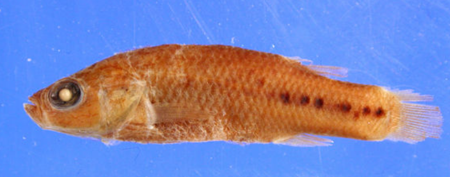

Systématique
- Ordre : Cyprinodontiformes
- Famille : Goodeidae
- Genre : Characodon
- Espèce : C. garmani
- Auteur : Jordan & Evermann, 1898

Characodon garmani, souvent surnommé le Goodeid de Parras, est une espèce historiquement originaire de l'État de Coahuila au Mexique. Il appartient à l'un des genres les plus primitifs de la sous-famille des Goodeinae. Morphologiquement proche de Characodon lateralis, il s'en distinguait par des détails de dentition et une forme de corps plus trapue.
L'espèce atteignait environ 4 à 5 cm de longueur. Son patron de coloration était composé d'une teinte de base gris-brun avec une rangée de taches sombres le long des flancs, pouvant fusionner en une bande latérale. Les nageoires étaient généralement transparentes ou légèrement fumées. Le mâle présentait des couleurs plus contrastées que la femelle, notamment en période de parade.
L'espèce est officiellement classée comme **"Éteinte" (EX)** par l'UICN. Aucun spécimen n'a été collecté ou observé avec certitude dans la nature depuis le début du XXe siècle, suite à l'assèchement total de son habitat d'origine.
Les informations sur le comportement vivant de Characodon garmani sont extrêmement limitées et proviennent principalement de déductions basées sur ses proches parents encore existants. Comme les autres membres du genre, c'était probablement une espèce calme, préférant les zones d'eau stagnante ou à courant très lent, riches en végétation.
Les Characodon sont connus pour être des poissons de "tempérament", les mâles pouvant être territoriaux entre eux. Ils occupaient les zones de rives peu profondes où la température de l'eau pouvait fluctuer de manière importante entre le jour et la nuit.
Mode : Vivipare matrotrophe.
Comme tous les Goodeinae, la fécondation était interne. La femelle portait les embryons qui étaient nourris par des trophotaeniae. On estime que le cycle de reproduction était similaire à celui de C. lateralis, avec une gestation d'environ 45 à 55 jours et des portées de petite taille, généralement moins de 20 alevins, mais de grande dimension à la naissance.
Dimorphisme sexuel : Le mâle possédait un andropodium (nageoire anale modifiée). Les mâles étaient généralement plus petits et plus colorés, tandis que les femelles étaient plus grandes et plus rebondies.
Espérance de vie : Inconnue, probablement 3 à 5 ans selon le modèle des espèces similaires du genre.
L'habitat type était limité à la zone d'eaux intérieures de Parras de la Fuente, dans le désert de Coahuila. Il fréquentait les sources, les sources thermales et les canaux d'irrigation alimentés par ces dernières. L'eau y était claire, alcaline et souvent tempérée.
Le biotope original a été totalement détruit par le pompage excessif des nappes phréatiques pour l'agriculture et les besoins urbains, menant à l'assèchement complet des sources de Parras. Ce désastre écologique a entraîné l'extinction simultanée de plusieurs espèces endémiques de la région.
Répartition

Origine naturelle :
- Mexique : État de Coahuila (Parras de la Fuente).
- Système endoréique du bassin de Parras.
- Statut : Éteint (Extinct).
Considéré comme disparu depuis longtemps. Des rumeurs de redécouverte ou de maintien secret en captivité par des collectionneurs ont circulé, mais aucune preuve scientifique n'a validé la présence de la souche pure de C. garmani de nos jours.
Paramètres de maintenance
Note : Espèce éteinte, paramètres déduits de C. lateralis.
Température : 18 à 24 °C (températures désertiques fraîches la nuit).
pH : 7,5 à 8,5 (eau alcaline).
GH : 15 à 25 °dGH (eau dure).
Courant : Nul à très faible.
Volume conseillé : N/A (Espèce disparue).
Régime alimentaire
Régime : Omnivore à tendance insectivore.
Se nourrissait probablement de petits invertébrés aquatiques, de larves d'insectes et de périphyton (biofilm et algues sur les roches).